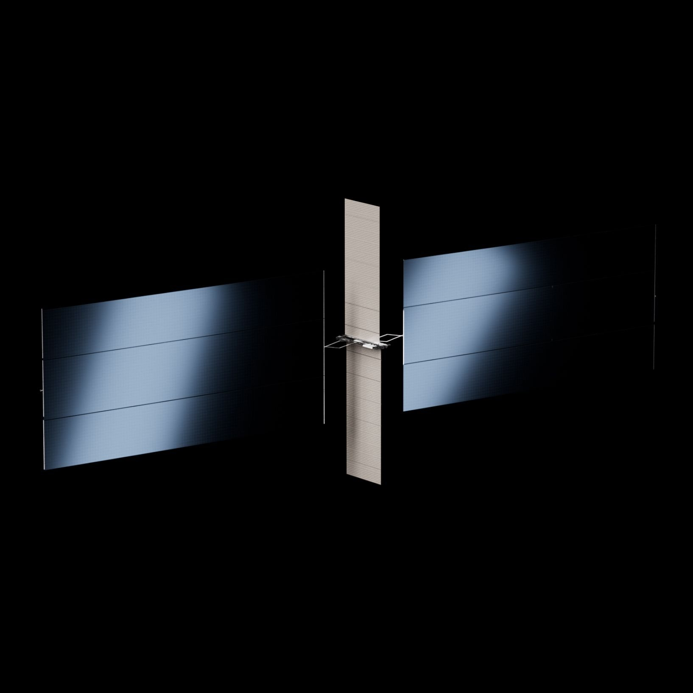
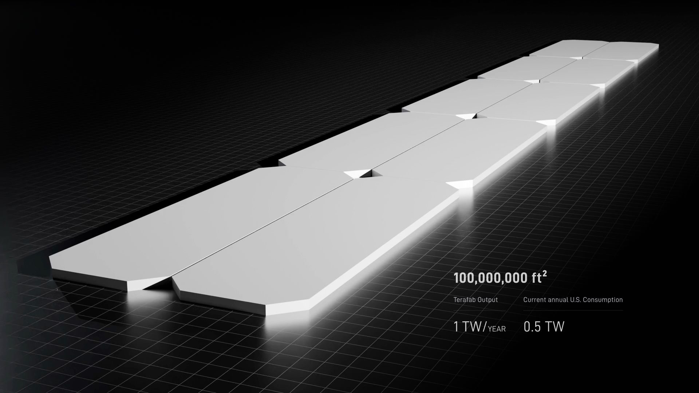
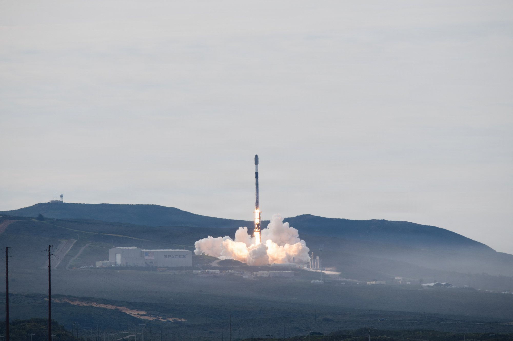

Per Elon Musk la vera partita dell’intelligenza artificiale non si giocherà sulla Terra. Fra venerdì 30 ottobre e domenica 1 novembre, rispondendo a investitori e analisti su X, il fondatore di SpaceX ha messo in fila tre messaggi: i centri dati a terra diventeranno marginali, i soldi spesi per costruirli rendono più di quanto il mercato creda, e il supercalcolatore Colossus 2 di Memphis è già oggi il più potente al mondo. È la prima volta che Musk indica una data, pur con un «probabilmente», per il sorpasso dello spazio sulla Terra.
«Noccioline» a confronto
Il primo messaggio è arrivato venerdì 30 ottobre. Shaun Maguire, socio del fondo Sequoia Capital e investitore di lunga data in SpaceX, aveva pubblicato un modello finanziario costruito dal basso, voce per voce, fino alla fine del 2028, definendolo una stima «al cinquantesimo percentile» con ampi margini di errore. Nel modello la capacità di calcolo di SpaceX a terra cresce da circa 1 gigawatt all’inizio del 2026 a 21 gigawatt alla fine del 2028, con circa 40 miliardi di dollari di ricavi l’anno per ogni gigawatt. I ricavi salirebbero da 51,5 miliardi nel 2026 a 274 nel 2027 e a 731 nel 2028.
Musk ha risposto con una frase che ha fatto il giro dei siti finanziari: «Terrestrial compute will be peanuts compared to orbital compute», il calcolo terrestre sarà come delle noccioline rispetto a quello orbitale. E ha aggiunto una data: «Orbital compute deployed per month probably exceeds terrestrial around the end of 2028 and then far exceeds it in 2029», cioè la potenza messa in orbita ogni mese supererà probabilmente quella installata a terra verso la fine del 2028, e la supererà di molto nel 2029. Al modello di Maguire ha riservato un commento più breve: «I think we can do better», penso che possiamo fare meglio.
Va letto con attenzione. Musk parla del ritmo di installazione, la potenza aggiunta ogni mese, non della capacità totale. E non ha legato la previsione a un numero di satelliti o di gigawatt.

Che cosa sono i satelliti Starmind
Il calcolo in orbita di cui parla Musk ha un nome: Starmind. Sulla pagina dedicata, SpaceX lo descrive come un satellite con computer di bordo che sfrutta l’energia e il raffreddamento «già disponibili nello spazio» e rimanda a Terra i risultati con collegamenti laser attraverso la rete Starlink. A pannelli aperti è alto 30 metri e ha un’apertura di 75. La parte di calcolo può assorbire fino a 250 kilowatt di picco, 175 in media, con un rapporto di 75 kilowatt per tonnellata di satellite.
Gli argomenti sono tre. In un’orbita eliosincrona i pannelli vedono il Sole quasi sempre, senza nuvole, atmosfera o rete elettrica da cui dipendere. Il calore si disperde irraggiandolo nel vuoto, senza torri di raffreddamento né grandi ventilatori, e SpaceX stima di ridurre di un ordine di grandezza l’energia spesa per il raffreddamento. Infine la società si dichiara neutrale sui chip: i moduli di calcolo possono arrivare da qualsiasi fornitore.
A inizio ottobre SpaceX ha messo per iscritto la scala del progetto: fino a 100.000 satelliti Starlink e fino a un milione di satelliti Starmind. Michael Nicolls, vicepresidente di SpaceX, ha spiegato che non voleranno da soli: «A cluster will be 10-ish satellites connected with 10 terabits or so of bandwidth between them», un gruppo sarà di una decina di satelliti collegati fra loro da circa 10 terabit di banda, in formazione stretta, per lavorare come un unico calcolatore. In un documento inviato alla FCC a settembre, la commissione federale per le comunicazioni, SpaceX ha indicato una massa fino a 4.000 chili per satellite, quasi sette volte uno Starlink V2 Mini. La produzione partirà dalla Gigasat Factory in costruzione a Bastrop, in Texas, con l’obiettivo di sfornare migliaia di satelliti a partire, nel migliore dei casi, dalla fine del 2027.
Il conto a terra: 470 miliardi?
Domenica 1 novembre è arrivato il secondo messaggio, sui soldi. Kyle Reidhead, analista della piattaforma di informazione finanziaria Milk Road, aveva stimato che a SpaceX serviranno circa 470 miliardi di dollari nei prossimi cinque trimestri per raggiungere l’obiettivo annunciato nella teleconferenza sui conti del 20 ottobre: almeno 13 gigawatt di calcolo entro la fine del 2027. Fra l’83 e l’89 per cento di quella cifra finirebbe a Nvidia per i chip. Musk ha risposto: «Our capex efficiency is greatly underestimated», l’efficienza dei nostri investimenti è molto sottovalutata.
Musk non ha dato cifre, ma il ragionamento era già nella teleconferenza. Il direttore finanziario Bret Johnsen aveva spiegato che oggi un nuovo impianto di calcolo si ripaga in meno di un anno ai prezzi attuali, e Musk aveva detto che il prossimo anno il tempo potrebbe scendere a sei mesi. Nello stesso schema di Reidhead, circa 230 miliardi arriverebbero dalla cassa generata dall’attività e circa 60 dalla liquidità di SpaceX, che si aggira sui 90 miliardi; ne resterebbero circa 180 da prendere a prestito. Una parte è già coperta: il 24 ottobre SpaceX ha firmato un leasing finanziario da circa 40 miliardi di dollari per chip e server con una società gestita da Apollo, con consegne dalla prima metà del 2027. Per il solo quarto trimestre la previsione ufficiale è di 35-40 miliardi di investimenti.
Il modello di Maguire mostra quanto sia ripida la salita: investimenti da 88 miliardi quest’anno a 290 nel 2027 e 369 nel 2028, con 77,8 miliardi di cassa bruciata quest’anno e 122,6 il prossimo, prima di tornare in positivo nel 2028. Nel disegno di Musk il cantiere terrestre serve proprio a questo: produrre i ricavi che pagheranno il passaggio all’orbita.

Colossus 2 e la corsa ai chip
Il terzo messaggio è della sera di domenica, alle 21:32 italiane. Rilanciando un post che indicava Colossus 2, il centro dati di SpaceXAI a Memphis, come il più potente al mondo con circa 1,11 milioni di «equivalenti H100», Musk ha scritto: «The other supercompute projects are unable to reach their goals, but SpaceX is already achieving ours», gli altri progetti di supercalcolo non riescono a raggiungere i loro obiettivi, SpaceX sta già raggiungendo i suoi. La cifra viene dall’istituto di ricerca Epoch AI, che stima la potenza dei centri dati osservando da satellite gli impianti di raffreddamento e le turbine. L’equivalente H100 è un’unità di misura che riporta chip diversi alla potenza di una scheda Nvidia H100.
Musk ha anche detto di attendere nuovi capannoni di Colossus 2 in funzione fra novembre e dicembre, con l’obiettivo di arrivare a circa 1,2 milioni di chip Nvidia Blackwell entro fine anno. Sul fronte della produzione di chip, la stampa taiwanese ha riferito di nuovi colloqui con TSMC per Terafab, la fabbrica che SpaceX vuole costruire con Tesla e con Intel come partner. A inizio ottobre Musk aveva escluso di cederne il controllo; le trattative, ancora non confermate dalle società, riguarderebbero proprio la gestione dell’impianto. Il primo chip di prova è atteso fra maggio e giugno 2027, la produzione in serie nel terzo trimestre del 2028.

Senza Starship non c’è orbita
Tutto questo poggia su un punto che la stessa SpaceX mette al primo posto fra i «fattori limitanti»: la massa da portare in orbita. Satelliti da quattro tonnellate, a migliaia, possono salire solo con un razzo interamente riutilizzabile e capace di grandi carichi. Il modello di Maguire ipotizza 250 voli di Starship nel 2028, contro due quest’anno e 38 il prossimo.
La settimana scorsa SpaceX ha dato un’idea della scala a cui pensa. Nella risposta di 24 pagine a una consultazione del dipartimento dei Trasporti e della FAA sui nuovi spazioporti e sui corridoi aerei per i razzi, firmata dal vicepresidente Mat Dunn, la società ha scritto: «SpaceX anticipates conducting 10,000 launches per year itself», SpaceX prevede di effettuare da sola 10.000 lanci l’anno, senza però indicare una data. Nel 2025 i lanci autorizzati dalla FAA in tutti gli Stati Uniti sono stati 182. Per SpaceX il limite oggi non sono più i razzi ma il controllo del traffico aereo, che chiude lo spazio aereo per oltre due ore a lancio; per questo chiede corridoi con priorità, autorizzazioni automatiche entro 48 ore e niente tariffe. Musk ha aggiunto su X che «10k Starship launches/year is just from Starbase Louisiana», diecimila lanci l’anno arriverebbero dalla sola futura base in Louisiana, progettata per circa 30 lanci e rientri al giorno.
Il passo più vicino resta Flight 15, la cui prima data possibile è il 12 novembre, in attesa della licenza FAA: sarà il volo in cui SpaceX tenterà di riprendere con la torre sia il booster sia la Ship. Senza la piena riutilizzabilità, i numeri di Starmind restano sulla carta.
Le cautele
Le cifre circolate nel fine settimana vanno prese per quello che sono. I modelli di Maguire e di Reidhead sono stime di investitori e analisti, non previsioni di SpaceX, e lo stesso Maguire avverte che dipendono da rischi politici e di approvvigionamento. La data di Musk è accompagnata da un «probabilmente». Starmind non ha ancora un satellite in orbita, la fabbrica di Bastrop è in costruzione e la richiesta per un milione di satelliti incontra l’opposizione di astronomi e associazioni ambientaliste, preoccupati per l’affollamento delle orbite. SpaceX risponde puntando sulla sicurezza: chiede a tutti gli operatori di condividere le traiettorie dei propri satelliti come fa già Starlink.
Cosa seguire adesso
Nelle prossime settimane contano quattro cose: la licenza FAA e il volo di Flight 15; l’entrata in funzione dei nuovi capannoni di Colossus 2 annunciata per novembre e dicembre; eventuali conferme sui colloqui fra SpaceX e TSMC per Terafab; e le prossime mosse della FCC sulla richiesta per i satelliti Starmind. Per i ricavi, il banco di prova è il primo trimestre del 2027, per cui SpaceX prevede fra 33 e 37 miliardi di dollari, più del doppio dei 14,58 miliardi del terzo trimestre.
Il dossier su Flight 15 al 12 novembre e sulla settimana record di Starbase passa all’archivio Notizie.
Fonti pubbliche e tracce
Ultimo aggiornamento editoriale: 2 novembre 2026, ore 9:45 (ora italiana). Nel corpo non si ripete la fonte a ogni frase: le tracce sono raccolte qui. Le citazioni in inglese sono tradotte o riassunte subito dopo.
- Elon Musk su X, 30 ottobre 2026: «Terrestrial compute will be peanuts compared to orbital compute» e previsione del sorpasso a fine 2028, in risposta ai grafici del modello di Shaun Maguire.
- Elon Musk su X, 1 novembre 2026, 21:32 italiane: commento su Colossus 2 e sugli altri progetti di supercalcolo.
- Teslarati, 1 novembre 2026, «Elon Musk calls Earth’s data centers “peanuts” next to what SpaceX is planning in orbit»: risposta di Musk sull’efficienza degli investimenti, stima di Reidhead, modello di Maguire, Starmind.
- TeslaNorth, 31 ottobre 2026 e TipRanks: dettagli del modello di Maguire (21 GW, ricavi 2026-2028, rischi).
- Stocktwits, 1 novembre 2026: citazione «Our capex efficiency is greatly underestimated», nuovi capannoni di Colossus 2, colloqui con TSMC riferiti da DigiTimes, calendario di Terafab, leasing con Apollo.
- SpaceX, pagina ufficiale Starmind: dimensioni, potenza, raffreddamento, Gigasat Factory, fattori limitanti, chip.
- Teslarati, 6 ottobre 2026 e pagina Space Safety di Starlink: un milione di satelliti Starmind, gruppi di dieci satelliti, dichiarazioni di Michael Nicolls, massa fino a 4.000 kg.
- Epoch AI, scheda Colossus 2: stima di 1,11 milioni di equivalenti H100 e metodo basato su immagini satellitari.
- Supercharged Daily, 28 ottobre 2026 e AviNews: lettera di SpaceX alla FAA (registro FAA-2026-9736), 10.000 lanci l’anno, corridoi e richieste, post di Musk su Starbase Louisiana.
- The Grid Fin, 1 novembre 2026: leasing da 40 miliardi del 24 ottobre, Flight 15 al 12 novembre.
- Rivoluzione Spaziale, dossier sui conti del terzo trimestre e breaking del 1 novembre 2026: contesto su ricavi, capacità di calcolo e Flight 15.
Fotografie utilizzabili
La notizia è fatta di dichiarazioni e progetti, non di un evento fotografabile: per questo la copertina e le due figure su Starmind e Terafab sono i rendering ufficiali pubblicati da SpaceX sulla pagina del progetto, usati con credito e solo a scopo editoriale non commerciale. Il lancio del Falcon 9 da Vandenberg è una foto della U.S. Space Force di pubblico dominio, d’archivio. Dettagli in scheda dei crediti fotografici.
Apri il dossier su Flight 15 archiviato · Archivio Notizie · Torna a SpaceX